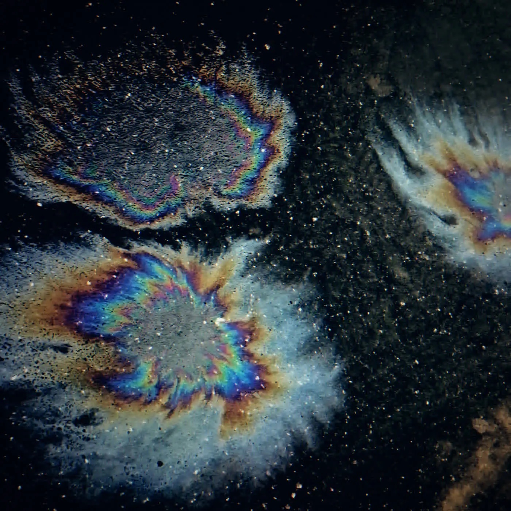

EssayJan 31, 2021
Oil and Chrome
SOPHIE died in Athens on 30 January 2021. The records, from BIPP to OIL OF EVERY PEARL'S UN-INSIDES, were already finished.
- format
- Essay
- date
- Jan 31, 2021
- places
- Athens
- words
- 782 words · 3 min
- photo
- Photo: Aniskov
- catalogue
- CC013
SOPHIE died in Athens on 30 January 2021, after a fall. The news moved the way news moves now: a photograph, a statement, a rush of people who had used the word hyperpop as a sticker discovering, too late, that a sticker is not a body of work. The body of work was already there. PRODUCT in 2015, on Numbers, with “BIPP” as the track that sounded like a plastic object learning to sing. OIL OF EVERY PEARL’S UN-INSIDES in 2018, with “It’s Okay to Cry” and “Immaterial.” A collaboration history with PC Music and with Charli XCX that gave a lot of listeners their first clean hit of the sound and their easiest excuse not to learn the rest.
What the records actually did, underneath the tribute cycle, was separate sound design from the assumption that electronic music should imitate acoustic bodies. The kicks are too shiny. The bass distorts in a way that feels like a material failing on purpose, the way latex fails if you treat it as skin. Voices slide between registers without asking the listener to decide on a gender story first; the music has already decided that timbre is an instrument. “Immaterial” says the philosophical part out loud, and it would be a lesser song if it were only philosophy. It is a pop song. The hook is humiliatingly catchy. That combination — a club track you can argue about and a melody you cannot shake — is the part imitators kept splitting. They took the metallic snare or they took the manifesto. SOPHIE kept them in the same bar.
“BIPP” is the earlier, ruder version of the idea. It promises ecstasy in the lyric and then builds a rhythm that feels like an object being squeezed. The joke and the wound arrive together, which is why copying the palette never quite worked. You can buy the same distortion. You cannot buy the timing of the joke. By the time the copyists had festival slots, the original records still sounded like the only finished versions, because they were finished. They were not sketches toward a trend. OIL OF EVERY PEARL’S UN-INSIDES is an album with a shape: the ballad at the start, the chaos in the middle, “Immaterial” as a thesis you can dance to, the long unspooling of “Whole New World / Pretend World.” Albums were not supposed to be the point of this sound. She made one anyway, and it holds.
Athens, as the place of death, got turned into a symbol by people who needed a symbol. It is a city, and it is where a terrible accident happened. The records were made elsewhere, in a career that ran through Glasgow — SOPHIE was from Glasgow — and through London’s PC Music orbit and through a life that became more public as the music did. A. G. Cook’s circle got a paragraph in every obituary. Charli got a paragraph. Both paragraphs are true and secondary. The primary text is the discography, which you can play without a timeline. Playing it is the part of mourning that does not require anyone to perform grief in public. “It’s Okay to Cry” is, among other things, a set of instructions that are better than the ones a comments section will give you. The song is gentle and it is not vague.
The years since have been a lesson in how quickly a radical sound becomes a preset. Hyperpop, as a playlist genre, sanded the specific records into a loudness contest and a visual code. SOPHIE’s music is loud, and there is a visual world around it, but the loudness is arranged. There are dynamics. There is air in “Is It Cold in the Water?” and there is none in “Ponyboy,” and the difference is the composition. A preset has no difference. It has a setting. The respectful way to be influenced is to accept that the setting will not save you, and to write a song anyway. A lot of the influence has been the setting.
This page used to end by telling the reader to leave the oil on and not to make her a saint. The second instruction is still the right critical caution: sainthood is another way of not listening, because saints are finished and these records are arguments. The first instruction can be simpler. The album is called OIL OF EVERY PEARL’S UN-INSIDES. It came out in 2018. It is not a metaphor for a scene. It is a tracklist. Athens is where she died, on the last day of January 2021. The work she had already finished is the part that does not depend on how the timeline behaved that week.